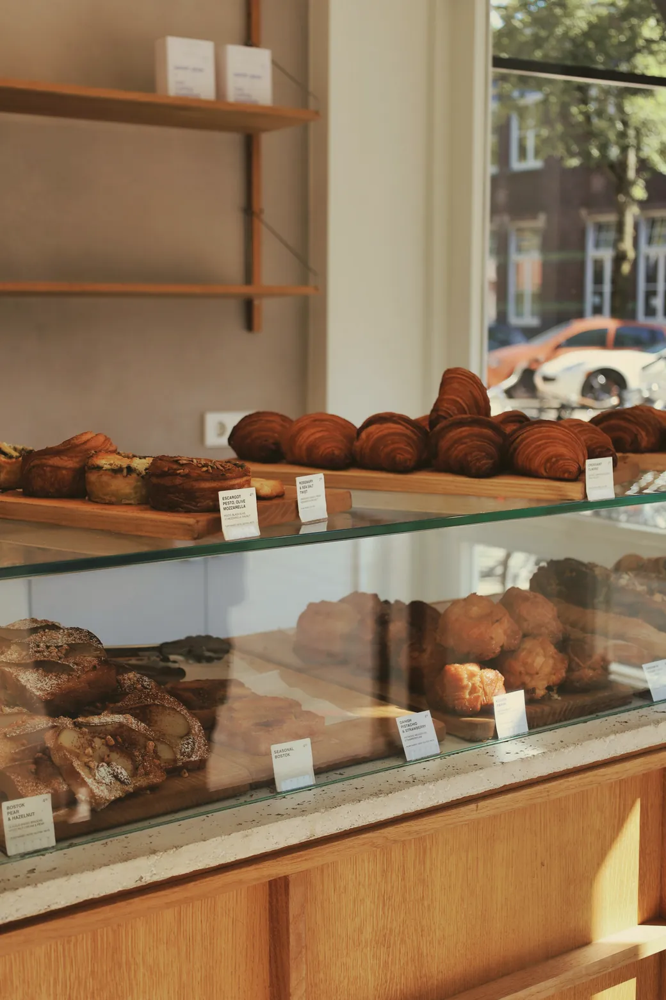
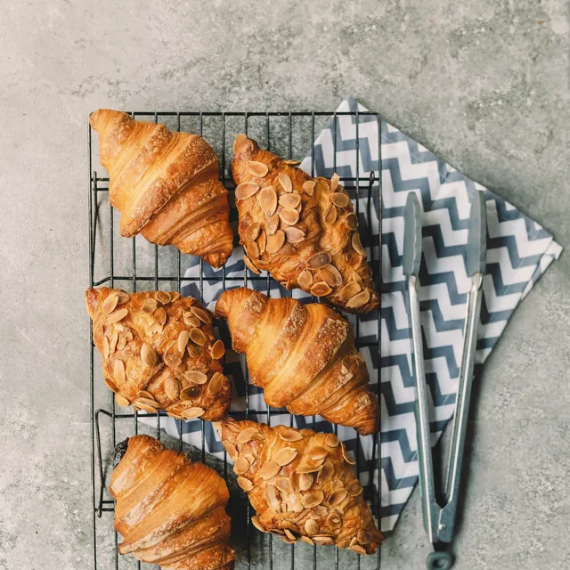
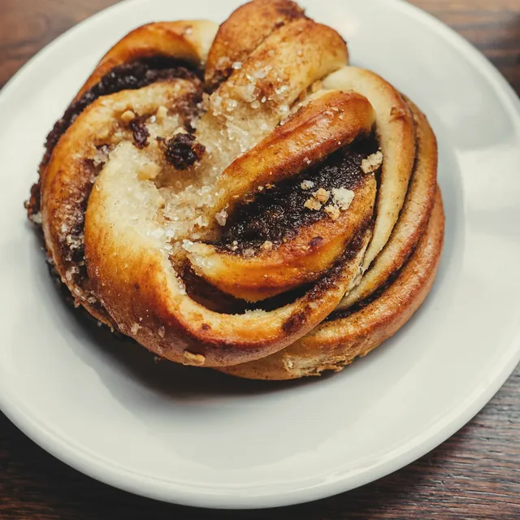
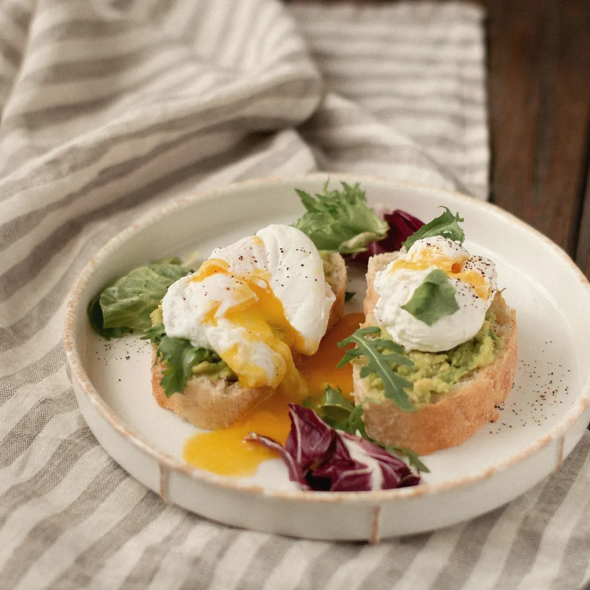
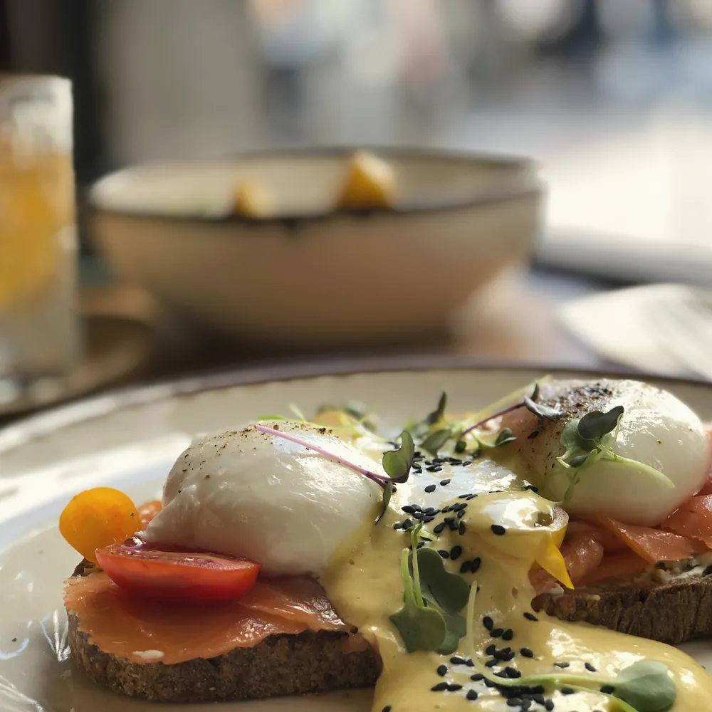
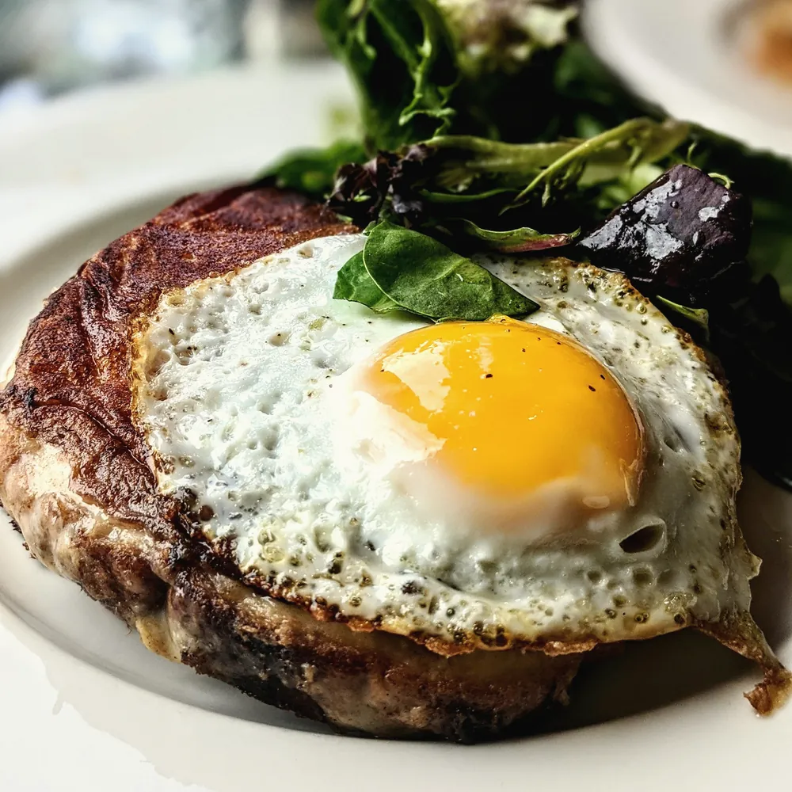

Case study · Coffee house · Gloucester Road, Bristol
Morrow
A neighbourhood café that answers the street's questions before the door opens.

Hour by hour, from the café's own till receipts.
Open now, and until when.
The first thing anyone checks. Morrow's site says whether it's open this minute, with today's hours, the way from the station, and a banner for the week that switches itself on and off: this week, pumpkin and sage soda bread for bonfire week.
Starter
Hours and Plan your visit
Open now or closed, today highlighted, the walk from Montpelier station step by step, step-free access and how to pay.
Starter
Seasonal banners
Bonfire week, Christmas, half-term: each with its dates, it appears on the first day and goes on the last, and tints the site to match.
Starter
Questions before a first visit
Oat milk, dogs, booking for brunch: answered on the home page in the café's own words.
Fresh out of the oven.
Signature
The glass case
The day's bakes on the café's own counter. When a tray comes out, staff add one line to the Google Sheet they already keep, and the bake lights up "Fresh out 8:10am". Sold out shows as sold out. Tap a bake for its allergens, and ask for one to be put aside.

Baked 10:50am
Baked 8:10amStarter
Today's board comes from the same sheet: the soda bread special, and anything sold out is marked on the menu too.
Your usual, ready when you walk in.
Signature
Your usual
A cup fills as you build the drink: flat white, oat, an extra shot. The price comes from the café's own list, each milk's allergens from its chart, and a ready time from how long it takes to make. Save it, and next time it's one tap. It goes as an order ahead on WhatsApp, with a bake from the case.
- Remembered on the phone; no account
- Closed for orders after closing, with when orders open again
Can I work here?
Plus
Yes, no, or which
Wifi, sockets, laptops, dogs, kids, buggies, step-free, toilets: answered plainly, with today's quiet stretches for laptops worked out from the café's own numbers.
- WifiYes
- SocketsSome
- LaptopsSome
- DogsYes
- BuggiesYes
- Step-freeYes
Signature
The seat finder
Morrow drawn from its own floor plan. Ask for a socket and the window, and the window bench lights up. The choice goes with an order or a table request, as a preference.
Signature
How busy is it now?
Staff's own word from the sheet while it's fresh; otherwise how busy Morrow usually is at this hour, said as usual, and when it gets quieter today. The chart at the top of this page uses the same numbers.
Lunch, with every allergen.
Starter
The menu, by sitting
Breakfast, brunch or lunch, whichever is on now. Every dish carries the fourteen allergens from the café's chart, with diet filters, and the menu prints as a PDF.
Plus
The full menu, and takeaway
A menu page with the allergen chart and "hide dishes containing…". A takeaway page with a running total and the allergens in the order, sent on WhatsApp.
Starter
Delivery
Links to the café's own pages on the delivery apps it already uses.
Brunch for six, ordered on the way.
Signature
The brunch builder
A plate for each person from the brunch dishes, with the sides they want, a running total and the allergens. It goes as a pre-order with the table request, so the kitchen is ready when they sit down.
Starter
The table request
Party size, day and time within the sittings, sent on WhatsApp as one message. A request the café confirms; never a promise.



The ones who come every day.
Starter
The stamp card
Morrow's own rules on its own card, and a slider that works out what coming in is worth over a year, from the café's own flat white price. Try it.
Morrow · the eighth is on us
Plus
The regulars' board
The guest roaster, what's playing, the dog of the week: whatever the café pins on its sheet, each card dated and gone after a week.
Plus
What's on
Latte art classes, cuppings with the guest roaster: dated events that drop off once they've passed, with add to calendar and booking on WhatsApp.
Plus
Gift vouchers
Pick an amount, add the names and a message, see the voucher, and order it on WhatsApp.
Starter
Reviews and photos
On a café's own site, reviews are copied from Google with the name and date, and the latest photos come from its Instagram.
Quick on a phone, all day.
Measured on the Morrow demo's home page.
- 24.6 KBof script for the whole site, compressed, with every feature on
- 97Lighthouse speed on a phone (90 on the very first, cold load)
- 100Lighthouse accessibility on a phone; layout shift 0
- 2 sor so until the largest part of the page shows, on Lighthouse's simulated phone connection
- 160 KBof photographs on the first screen
- £0a month to run beyond hosting: the café's own Google Sheet and WhatsApp
Starter
£99 to set up, then £25 a month
- Home and Plan your visit
- Open now, hours, seasonal banners
- Menu with all 14 allergens, and its PDF
- Today's board and sold-out
- Table request and delivery links
- Stamp card, reviews, photos
Plus
£199 to set up, then £30 a month
- Up to 5 pages
- Everything in Starter
- Can I work here?
- The regulars' board
- Menu page and takeaway
- What's on and gift vouchers
Signature
£349 to set up, then £35 a month
- Up to 20 pages
- Everything in Plus
- Your usual
- The glass case
- How busy is it now?
- The seat finder
- The brunch builder
Twelve-month minimum. Any feature can be added to any plan on its own, and extra pages one at a time.
Put the kettle on.
Run a café, a coffee shop or a bakery counter? Send us your Instagram or Google listing and we'll make a free mockup with your name, your menu and your photos.
hello@sitefloor.com